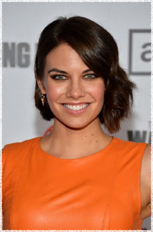

Лорен Коэн
 Мэгги Грин живёт со своим отцом Хершелом и сестрой Бет в уединённой ферме. Опытный всадник Мэгги доказывает свой характер после выстрела в Карла, когда она находит Лори, чтобы рассказать ей о произошедшем. Она также использует лошадей, чтобы совершать поездки в город для пополнения запасов продовольствия.
Лорен Коэн в настоящее время играет роль Мэгги Грин в Ходячих мертвецах. Предыдущие телевизионные роли Коэн включают в себя ряд постоянных ролей в сериале Сверхъестественное, основных арках в сериалах Чак и Дневники вампира, а также появление в качестве гостя в сериалах Американская семейка, CSI: Место преступления Нью-Йорк и Детектив Раш.
На большом экране Коэн появилась с Хитом Леджером в фильме Казанова, снялась в фильме Король вечеринок 2 и приквеле Смертельная гонка 2: Франкенштейн жив.
Родившись в Филадельфии, Коэн провела своё детство в Нью-Джерси, прежде чем переехать в Соединенное Королевство в возрасте 13 лет. Там, она закончила университет Винчестер / Колледж короля Альфреда, где она изучила драму и английскую литературу. Во время учёбы в университете, она стала соучредителем и гастролировала с театральной компанией Нейтральная зона. Коэн в настоящее время делит свое время между Лондоном и Лос-Анджелесом.
Наиболее известна по фильмам:
Казанова
Сверхъестественное
Американская семейка
Жизнь как приговор
Чак